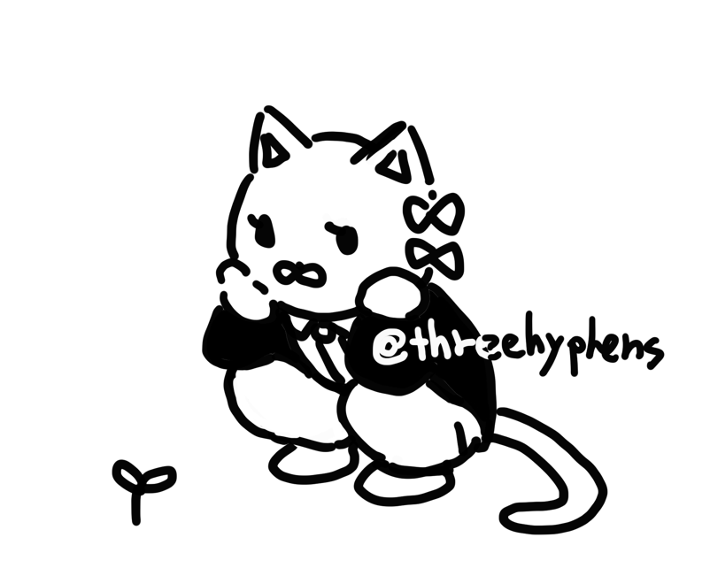
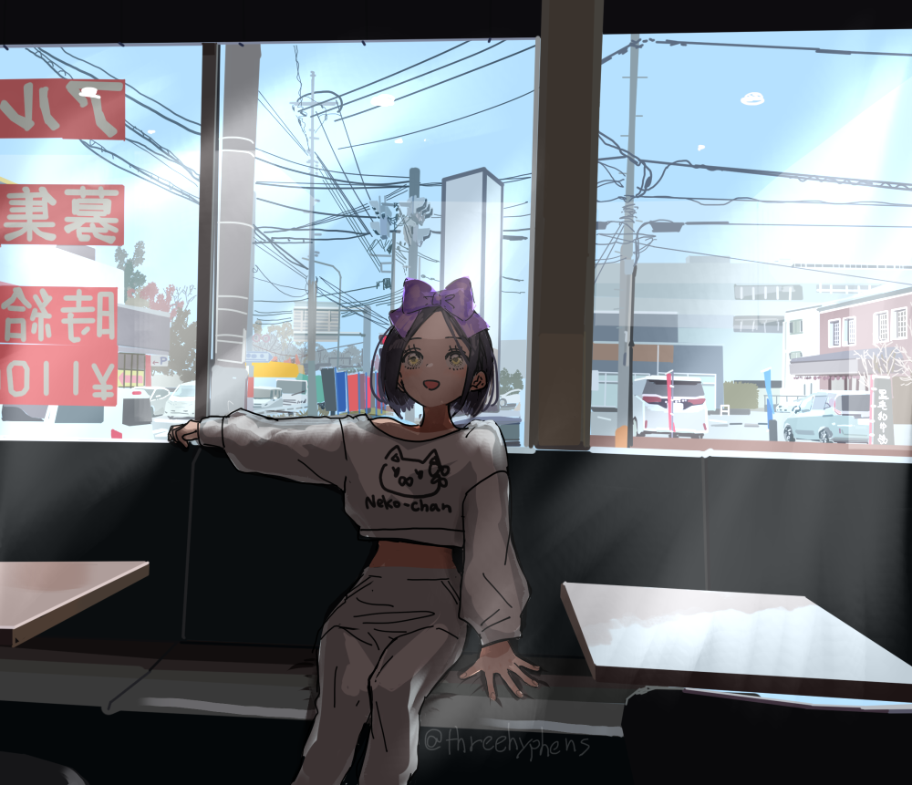
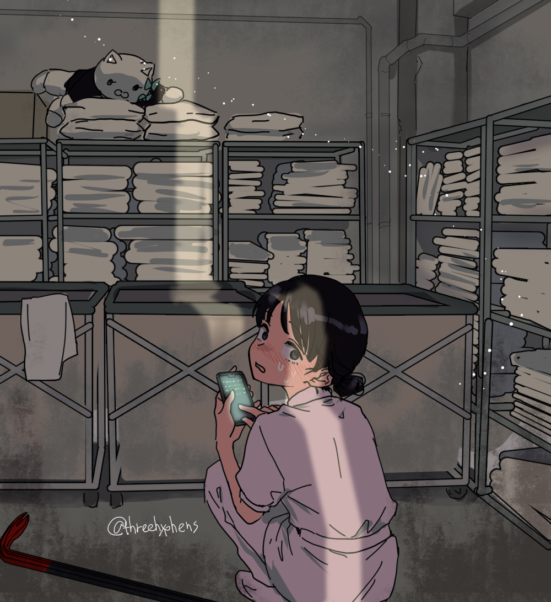
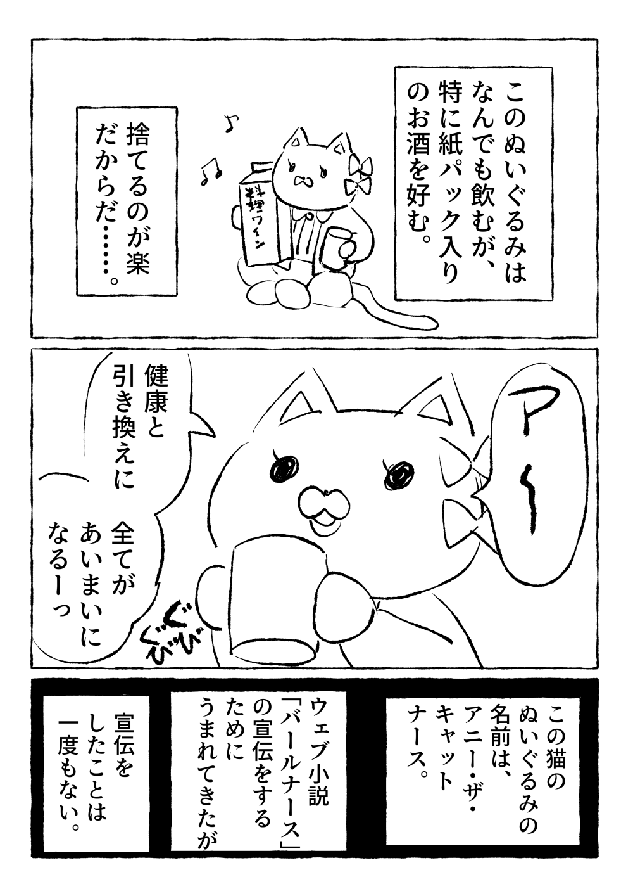
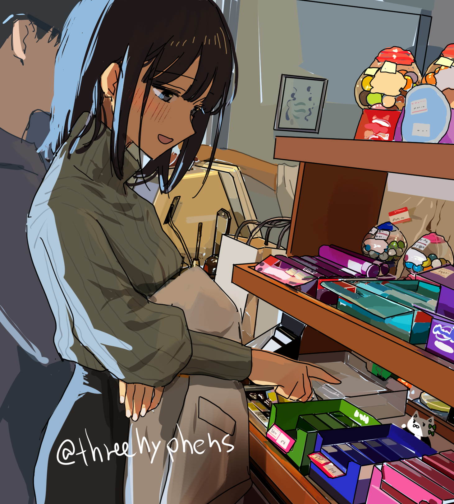

「バールナース番外短編集」に第12話を追加しました。
「それは本当に、熱中症ではないですね……。」をお読みいただけます。
web fiction, comics & illustrations
小説・漫画・イラストの個人創作サイトです。
An independent creative site featuring original web fiction, comics, and illustrations.
作品を見る
お知らせ
「それは本当に、熱中症ではないですね……。」をお読みいただけます。
公開済みの全11話を掲載しました。
漫画25枚を、3つのページに分けてお読みいただけます。
全60枚を、6つのイラストページに分けてお読みいただけます。
全131話を、7つの章に分けてお読みいただけます。
第1話から第10話までお読みいただけます。
創作作品
小説・漫画・イラストを、作品ごとにまとめてご紹介します。

勇者のジジイとラスボス令嬢の２０２５冬ロードサイド大暴れ物語
web fiction / 10 episodes
作品を読む
ゾンビと懐かしゲームネタだらけ！ こじらせた社会人たちの異世界←→新宿行き来系恋愛小説
web fiction & illustration / 131 episodes / 6 art pages
作品を読む
小説宣伝を一切やらない小説マスコットの漫画まとめ
comics / 25 images / 3 pages
漫画を読む
バールナース完結後の恋愛短編集
short fiction / 12 episodes
作品を読む活動紹介
このサイトについて
threehyphens は、オリジナルの小説・漫画・イラストを掲載する個人創作サイトであり、管理人のハンドルネームでもあります。
私の作品に関しましては、SNSでの言及、スクショツイや二次創作、ものすごい酷評、作品のダウンロード等、全部OKです。 売っているものを転載転売することは禁止しておりますが、小説については非商用であれば翻訳OKです。読んでくださった方が私の無料公開しているイラストを使って小説作品を紹介して下さるのも嬉しく思っております。
趣味での翻訳はOKですが、私は自分の小説に関して商用目的の翻訳は許可していません。そして、適切な著作者表記がされることを望んでいます。（CC BY-NC-SA 4.0） イラストも商用目的でなければ転載可能です。イラストに描かれているサインを消すような悪質行動に対しては対処行動をとらせていただきます。
また、私がお仕事で描いた絵に関しては私が決めたルールではなく依頼なさった方のルールに従って下さい。
threehyphens is both a personal creative website featuring original fiction, comics, and illustrations, and the handle I use as its creator and administrator.
You are welcome to mention my works on social media, post screenshots of them, create fan works, criticize them as harshly as you like, or download them. Reposting or reselling anything I sell is prohibited, but non-commercial translations of my fiction are allowed. I am also delighted when readers use illustrations I have made freely available to introduce or recommend my fiction.
Non-commercial translations made as a hobby are welcome, but I do not permit translations of my fiction for commercial purposes. I ask that proper credit be given. (CC BY-NC-SA 4.0) My illustrations may also be reposted for non-commercial purposes. I will take action against malicious conduct such as removing the signature from an illustration.
For artwork I have created as commissioned work, please follow the rules set by the person who commissioned it rather than the rules I set here.